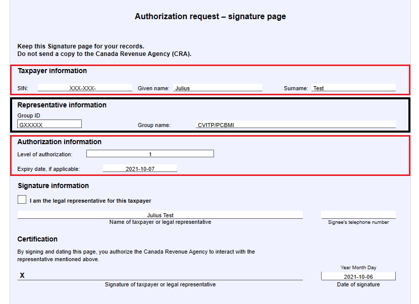

On this page
- Introduction
- Authorization Terms and Conditions for CVITP
- Requirements for using AFR
- Police records check (PRC)
- CRA Authorization request
Introduction
It is optional to use Auto-fill my return. You can still file returns electronically without using this service. However, the CRA encourages the use of AFR as it helps reduce errors and increase the number of accurate returns.
Using AFR can also improve the service you offer to individuals with missing income slips and to those who may be faced with language barriers or other factors preventing them from getting access to their information.
The following information is available through AFR:
- tax information slips
- RRSP contribution limit
- Home Buyers’ Plan repayment amount
- tuition, education, and textbook carry forward amounts (federal and provincial)
For a complete list, refer to Auto-fill my return on canada.ca.
CVITP volunteers do not have access to the Client Data Enquiry page through the Auto-fill my return service.
To use AFR, you must file an Authorization request in the current year UFile CVITP software for each individual served. Refer to screen by screen instructions - Submitting Authorization request.
AFR can only download information that the CRA has available at the time of filing. When you prepare returns for individuals, you still need to enter other income slips that have not yet been received by the CRA and additional tax information, such as medical expenses and child care.
Authorization terms and conditions for CVITP
Disclaimer
To use AFR, you must agree to the Authorization Terms and Conditions for CVITP. If you disagree, you cannot use the AFR service.
To maintain the confidentiality of taxpayer information as required by section 241 of the Income Tax Act, I agree to the three following conditions. I also acknowledge that if I do not meet these conditions, my privileges to electronically submit an authorization request could be suspended. I hereby agree that:
- the electronic submission capabilities of this software package will only be used for activities related to preparing and completing tax return(s) for the taxpayer identified on the Authorization request - signature page
- I will submit the information on behalf of the taxpayer on the date the signature page was signed
- I will provide each taxpayer with the Authorization request - signature page in its original or other acceptable formats
Requirements for using AFR
To use AFR, you must:
- register in Represent a Client and obtain a RepID
- register as a CVITP volunteer
- provide your RepID during registration; or, if registration is already completed, provide it directly to your CRA coordinator
- apply for an EFILE number or renew your EFILE account
- provide a valid police records check (PRC) to your organization
- use the UFile CVITP software
For more information on registrations, refer to Register to volunteer.
Police records check (PRC)
With increased access to individuals’ information comes a certain amount of risk. As a result of this increased risk, and to protect individuals' personal information, all volunteers who wish to use the Auto-fill my return service are asked to obtain a valid police records check (PRC).
You are responsible to obtain your PRC. A PRC can be issued through any police service, including municipal and regional police forces, or through a private company that provides personal background checks. Typically, there is a cost to obtain a PRC. Your organization may be able to provide you with a letter that will allow PRC fees to be waived or reduced.
Once you obtain a PRC you must provide it to your community organization.
PRC Validity
For the CVITP, a PRC is considered valid if it was issued within the past three years. If your PRC was issued more than three years ago, you require a new one. PRC results should be consistent with the program terms that you agreed to during registration.
CRA Authorization request
Authorization request – signature page – CVITP version
Text version
Authorization request - signature page
Taxpayer information section is highlighted
Representative information section is highlighted
Authorization information section is highlighted
| Customized fields | The following information is hard-coded in the CVITP version of this page:
|
Automatic expiry date |
When this page is submitted through UFile CVITP software, an automatic expiry date is applied. The authorization is only valid until 11:59 p.m. Eastern Time on the same day it is transmitted to the CRA. An error message will be generated when the authorization expires before Auto-fill my return has been triggered. If this occurs, volunteers can submit a second Authorization request and continue with the process. |
*Level 1 access
Authorized volunteers have Level 1 access, which only allows them to view an individual's information online. Volunteers, authorized under the CVITP Group, cannot request or make any changes to an individual's account.
If your organization or clinic location is not able to print documents, your CRA coordinator can provide you with printed copies of the customized Authorization request – signature page, pre-populated with the CVITP GroupID and name, and level of authorization.
You may also access it on the related items page. You are responsible for filling in the expiry date. The expiry date and the date the Authorization request is signed must always be the same.
Filing the Authorization request
Before you ask the individual to sign the Authorization request – signature page, you must read them a script that fully discloses what they are consenting to. You must read the entire script as it is written.
View Script
As an individual, your CRA account information is private and confidential. As a CVITP volunteer, I am part of a group of CVITP volunteers that can act as an authorized representative on your account.
Your consent is required to authorize this group on your account so that I can use the Auto-fill my return service to complete your income tax return. This authorization will also allow me to view your tax information online, through the CRA’s Represent a Client service.
- Your Social Insurance Number (SIN) is required before any information can be viewed online.
- This authorization does not allow me to make any changes to your personal/tax information online.
- This authorization is only valid until 11:59 p.m. tonight (EST).
I will send this page electronically (via my computer) to the CRA and I will provide you with a paper copy for you to sign and keep for your records.
Do you authorize me, as part of the CVITP group, to represent you in communications with the CRA, and to use the Auto-fill my return and/or Represent a client services on your behalf? YES or NO
A child can sign the Authorization request – signature page at age 16.
- For CRA purposes, a child can act on their behalf and appoint a representative of their choice at the age of 16, unless the child is mentally disabled or not competent
- The parent or legal guardian of a minor would be able to authorize a third party to act as an authorized representative for tax matters of that child, but only until that child reaches the legal age of consent (adulthood/age of majority) in their province.
- 18 years old in Alberta, Manitoba, Ontario, Prince Edward Island, Quebec, and Saskatchewan
- 19 years old in British Columbia, New Brunswick, Newfoundland and Labrador, Northwest Territories, Nova Scotia, Nunavut, and Yukon
The signed authorization must be given to the individual for their records.
Once the form is accepted by the CRA, the CVITP GroupID is listed as the authorized representative on the individual’s account. This authorization allows the volunteer, as a member of the Group, to use AFR on the individual’s behalf and to view their tax information online through the Represent a Client portal.
Tip
As of January 2021, when a volunteer, who is authorized on an individual’s account, calls the CRA on behalf of the taxpayer, they will be asked for their RepID.
The call centre agent will confirm the CVITP GroupID is authorized on the individual's account and verify that the volunteer’s RepID is associated with the CVITP GroupID.
Once the call centre agent confirms this information, the volunteer will be granted access to the individual's confidential information over the telephone.
Filing the Authorization request virtually
If you are using AFR virtually, you must obtain verbal authorization from the individual to send the authorization form to the CRA. You must read the following script exactly as it is written.
View Script
As an individual, your CRA account information is private and confidential. As a CVITP volunteer, I am part of a group of CVITP volunteers that can act as an authorized representative on your account.
Your consent is required to authorize this group on your account so that I can use the Auto-fill my return service to complete your income tax return. This authorization will also allow me to view your tax information online, through the CRA’s Represent a Client service.
- Your Social Insurance Number (SIN) is required before any information can be viewed online.
- This authorization does not allow me to make any changes to your personal/tax information online.
- This authorization is only valid until 11:59 p.m. tonight (EST).
I will send this page electronically (via my computer) to the CRA.
Do you authorize me, as part of the CVITP group, to represent you in communications with the CRA, and to use the Auto-fill my return and/or Represent a client services on your behalf? YES or NO?
You must also complete a TIS60 for each individual for whom you are completing a tax return, whether or not you are using AFR.
Multi-factor authentication - Auto-fill my return (AFR) and CVITP volunteers
Last year, the CRA introduced a new multi-factor authentication (MFA) security feature to enhance the security of its sign-in services. This extra layer of security has been put in place to ensure the safety and protection of taxpayer information.
Enrollment in MFA is now mandatory for all taxpayers using CRA’s sign-in services – including CVITP volunteers using the Auto-fill my return or Represent a client services.
It is no longer permitted to cancel the mandatory enrollment status under any circumstances. If you do not want to enroll in MFA, you will not be able to access any CRA online services.
For more information on using the multi-factor authentication security feature for CRA sign-in services, refer to Multi-factor authentication to access CRA login services.